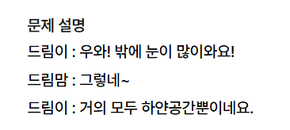
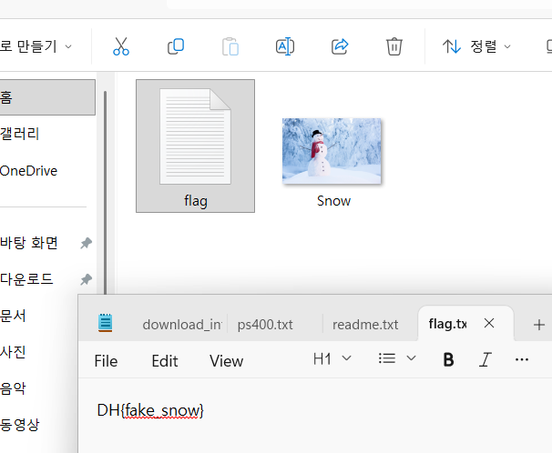
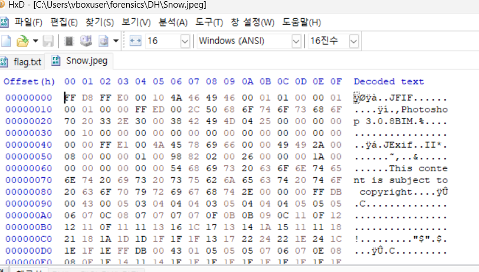
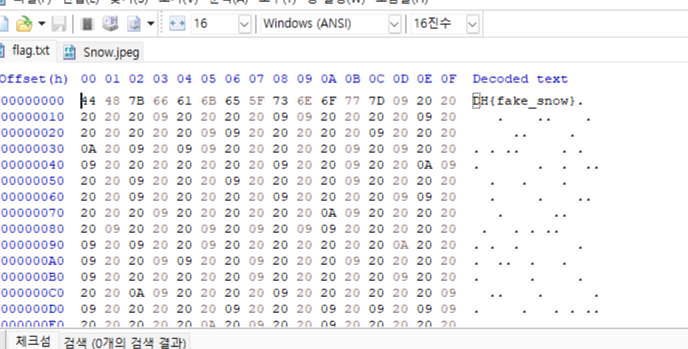
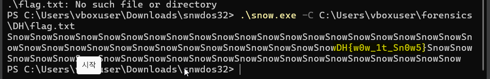
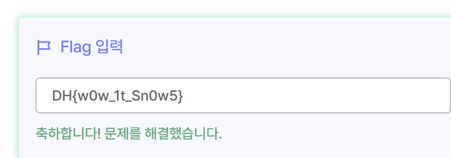

0. 문제 설명

1. 파일 확인

문제 파일에는 이미지 파일과 텍스트 파일이 존재했고, flag.txt 파일 내에는 fake flag가 존재했다.
2. HxD
두 파일을 HxD로 열어 내용을 확인한다.
2-1. 이미지 파일

2-2. 텍스트 파일

텍스트 파일에서 일반적이지 않은 패턴이 눈에 띈다.
평문이 있고, 그 뒤에 아래 세 가지 문자만 길게 이어지는 패턴이다.
| 0x20 | 스페이스 |
|---|---|
| 0x09 | 탭 |
| 0x0A | 줄바꿈 |
의심 기법
SNOW (공백 스테가노그래피)
3. snow
SNOW 도구로 flag.txt에 숨겨진 데이터를 꺼낸다.
.\snow.exe -C .\flag.txt
-C | 압축된 데이터까지 풀어서 출력 |
|---|

4. 결과
플래그 찾기 완료
